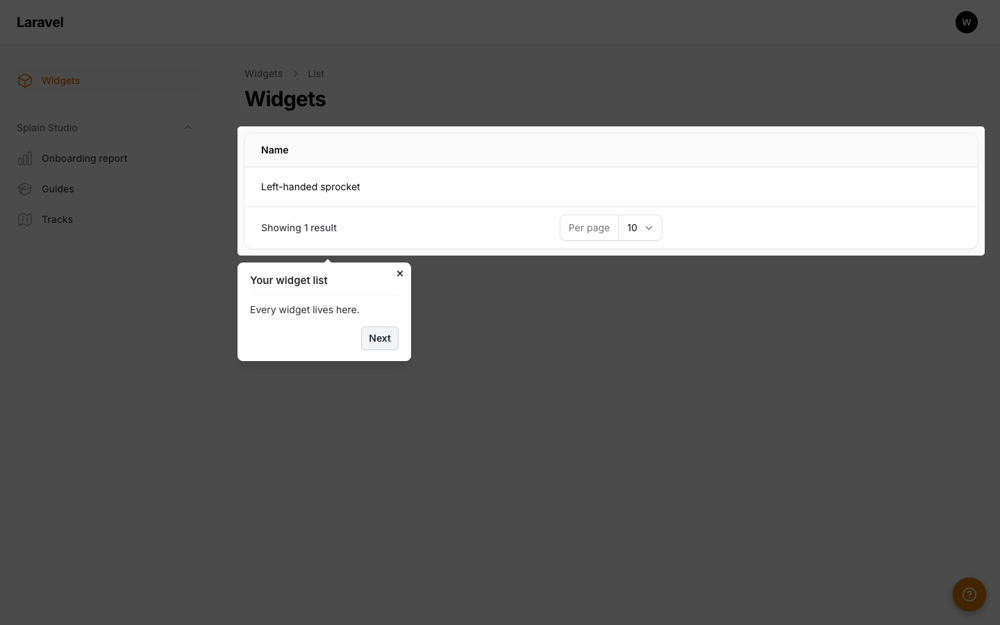

Guidance is easy to demo.
It's hard to keep true.
Every team knows the ritual: someone new starts, and someone experienced walks them through it — again. The tools that promise to fix this mostly bolt a tour on from outside: a browser extension, a third-party script, a recorded overlay that breaks the first time the interface changes and nobody notices for months.
Splain was built on a different bet: guidance belongs inside the app, anchored to the code, and the build should fail when the two drift apart. A guide's steps name real elements with exact selectors. A checker replays every guide against every page before anything ships. If a refactor deletes an anchor a guide depends on, your CI goes red — the walkthrough can't silently rot into a lie.
The proving ground
Splain has been a standalone package from day one — and it grew up against a deliberately hard test bed: a live staffing platform with real workflows, real privacy stakes, and real users. That environment set the bar for everything on this site:
- Walkthroughs had to survive modals, confirmation dialogs, dropdown menus, failed validations, and multi-page journeys — because the real workflows used all of them.
- Privacy Mode exists because recording a tutorial over real records is unacceptable — and it is honestly scoped as a presentation aid, because calling it more would be a lie.
- The publishing gate demands a named human sign-off that a guide describes how work is really done — because the interface allowing an action is not the same as that being the workflow. (Staff aren't added by clicking "New" — they arrive through hiring. A guide that says otherwise is worse than no guide.)

The recursion
The Studio's own test suite drives a Splain tour of the Studio itself. The docs on this site tour themselves. The dot in the corner of this page is the real playback engine, running the shipped free-tier bundle. We couldn't help it — and it keeps us honest: if the product can't explain itself, why would you trust it to explain yours?
The rule that governs everything
That's also why this site is short on adjectives and long on receipts. Splain isn't revolutionary — in-app guidance is a proven category. It's a different set of trade-offs: self-hosted instead of SaaS, code-anchored instead of fragile, built-in instead of bolted on, honest instead of shiny.